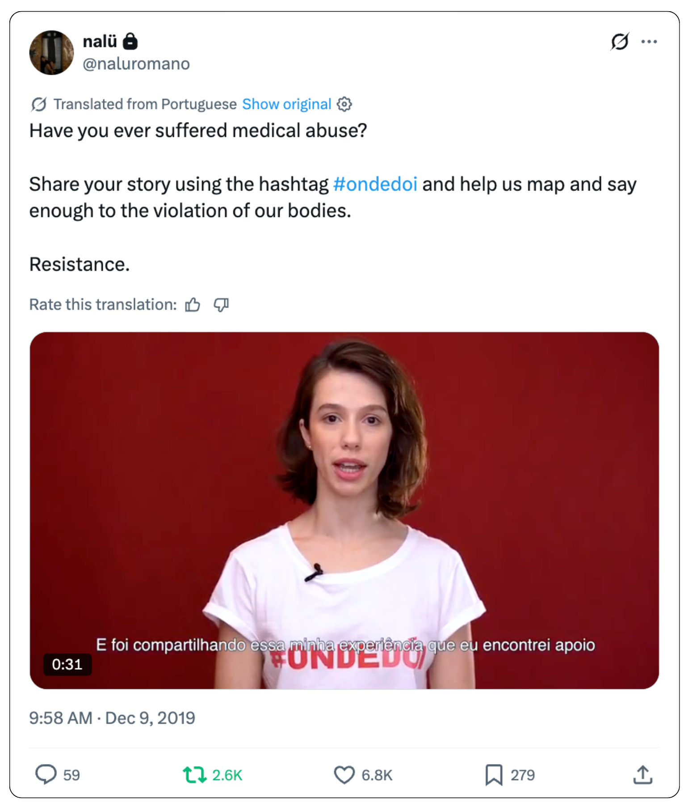

In 2019, 28-year-old Nina Marquetti decided it was time to come out publicly about being a rape survivor.
And they were going to do it on national television.
A transplant from a small town in Paraná, south of Brazil, the young actor had been struggling with trust issues, depression, anxiety, and suicidal thoughts for the past decade — all consequences of a visit to her hometown pediatrician when she was a teen. Alessio Fiore Sandri Jr., who owned a trusted private practice in the town of Umuarama, violated Marquetti on the examination table. They were only 16.
The Victims
Marquetti spoke out to family members, but was discouraged from reporting the doctor. So they kept silent, while guilt, self-doubt, and shame corroded their self-worth over the years.
Twelve years later, after sharing her experience to a group of Brazilian women expats and immigrants, she received an enticing proposal. New York-based journalist Heloisa Vilela, a correspondent for a free-to-air television network in Brazil, offered to tip the network's local investigative team. After all, Sandri Jr. was still practicing in their hometown and even sitting on the State's medical ethics committee.
What came next didn't surprise Marquetti.
The network found two police reports, one filed by a former employee and another by the family of an underage victim. Due to differences in name spelling, the police had treated the cases as unrelated. There was no investigation underway for either.
The network had a scoop, but the story needed a face. The victims behind the complaints only agreed to speak on the condition of anonimity. Marquetti agreed to go on camera. But they also wanted to encourage other victims to come forward. The "Onde Dói" campaign was born.
The Campaign

After the story aired in Brazil, Marquetti launched an online campaign called “Onde Dói” (Where it Hurts, in direct translation). The goal was to use the momemtum to encourage other survivors of sexual abuse by medical professionals to come forward. In 24 hours, the hashtag #OndeDoi went viral on Twitter and reached third place on the national Trending Topics.
It was Brazil's own #MeToo movement.
As countless users shared on Twitter their accounts of being sexually assaulted and harrassed by doctors and medical providers, hundreds took Marquetti's Google survey. After 10 years grappling with their own pain of being a sexual assault survivor, they were now given an inside look at similarly painful experiences of hundreds of people from all over Brazil - mostly women.
This is the first time the survey data is being shared with the public.The Data
The survey collected over 600 responses from all over Brazil between December 2019 and early 2020. It asked survivors about the type of abuse they endured, their age when it happened, whether it was a male or female doctor, their medical specialty and where the offense took place (hospital, free clinic, private practice, etc).
The first iteration of the survey, which gathered over 400 responses, included mostly qualitative questions and didn't make answering them a requirement, to avoid retraumatizing survivors. However, the two following iterations of the survey addressed the requirement issue and included more multiple choice questions, allowing for a more structured data collection, especially pertaining to demographic information about the victims and perpetrators. Those two surveys collected 188 responses, which were used for this analysis.
The data shows that the majority of victims were female (96 percent), and the majority of perpetrators were male (91 percent). Regardless of economic status, age group or race, sexual assault by fraud or deception was the main type of abuse reported (71 percent), followed by verbal sexual harassment (35 percent).
The top specialties behind most of the sexual assault cases are gynecologists and OBGYNs (37.5 percent), followed by primary care (14 percent), pediatrics and cardiology (5 percent each). Six out of ten times, the offense will take place in a private doctor's office - regardless of their specialty, the victim's age, race or economic status.